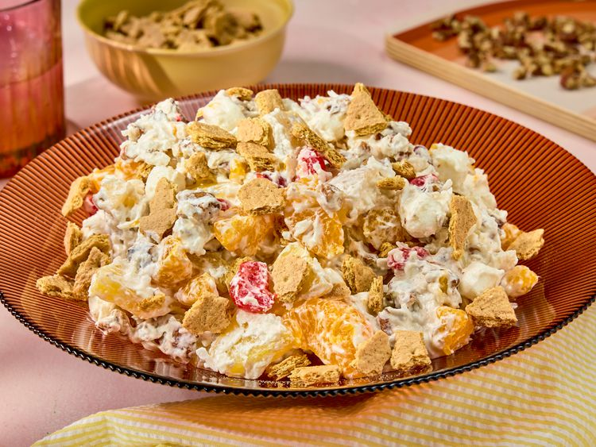

Home
Millionaire Cheesecake Salad

Description
This millionaire cheesecake salad is a fun spring treat, a dessert
salad that is perfectly balanced—sweet and nutty, with a subtle tang
from the canned fruit, all folded into a creamy, airy, cream cheese
mixture.
Ingredients
- 1 (8 ounce) package cream cheese, softened
- 3 tablespoons confectioner's sugar
- 1/2 cup French vanilla dairy creamer
- 1 (8 ounce) container frozen whipped topping, thawed
- 2 (15 ounce) cans mandarin oranges, drained
- 1 (20 ounce) can pineapple chunks in juice. drained
- 1 (15 ounce) can pear chunks, drained
- 3 cups miniature marshmallows
- 1 (16 ounce) jar maraschino cherries, drained, halved,and
patted dry
- 1 (7 ounce) package sweetened flaked coconut
- 2 cups chopped toasted pecans
- 4 graham cracker sheets, broken into 1/2-inch pieces
Steps
- Gather all ingredients.
- Beat cream cheese in a large bowl with an electric mixer on
medium-high speed until smooth and fluffy, about 2 minutes. Beat
in powdered sugar until incorporated and smooth. With beaters
running, slowly drizzle in creamer until smooth and fully
combined, about 1 minute total. Fold in whipped topping.
- Add oranges, pineapple, pears, marshmallows, cherries, coconut,
and pecans to cream cheese mixture; fold until fully coated.
Serve immediately or refrigerate until chilled, about 1 hour.
- Just before serving, sprinkle evenly with graham crackers.